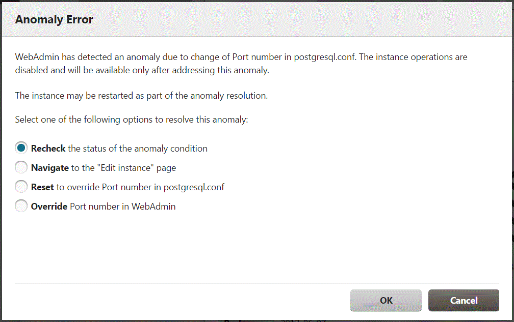

An anomaly occurs when the value of [Port number] and/or [Backup storage path] in WebAdmin is different from the value of its corresponding parameter in postgresql.conf - port and backup_destination, respectively.
WebAdmin checks for anomalies when an instance is selected for viewing or any instance operation is performed. Anomalies will be identified for the selected instance only.
The following occurs when an anomaly is detected in port number and/or backup storage path:
All instance operation buttons are disabled, except for "Edit instance", "Refresh instance", and "Delete Mirroring Controller"
A red error status indicator is displayed on the instance icon
For an anomaly specific to backup storage path, a red error status indicator is displayed on the [Backup storage] disk icon, and [Backup storage status] is set to "Error"
The message, "WebAdmin has detected an anomaly with...", is displayed in the [Message] section along with an associated [Solution] button
Click [Solution]. The [Anomaly Error] dialog box is displayed.

Select the required option, click [OK], and then resolve the anomaly error.
Refer to "Editing instance information" in the Installation and Setup Guide for Server for information on the [Edit instance] page.
Note
Critical errors encountered during anomaly resolution will be displayed, however, rollback of the instance to its previous state is not supported.